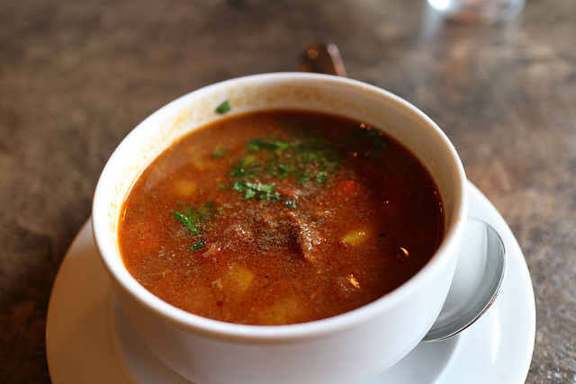

Aneka Masakan
Resep
Baca Nanti
Terdapat {{ reseps.length }} Resep

{{ resep.name }}
{{ resep.servings }}
{{ getIntro($index) }}
Load More
Terdapat {{ reseps.length }} resep masakan yang akan di baca.
{{ resep.name }}
{{ resep.servings }}